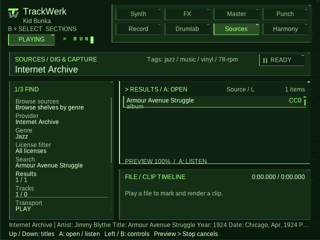
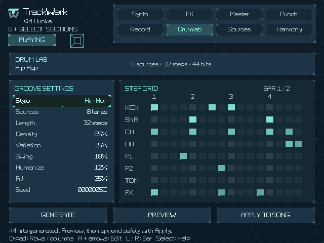

Terminal glow. BBS colour. Raster drama. Hardware calm. Forty complete Scenes change layout, lettering and atmosphere together. Pick one that makes you want to play.
HARDWARE / BUNKA SIGNAL
40 / 40
BUNKA SIGNAL
Clean panels. A little circuit-board attitude. The same notes underneath.
Palette and typeface remain independent. Motion can be switched off.
THIS IS WHAT THE NEW LOOK IS FOR
Less searching for the next control. More finding the next idea.
Cursor glide & soft scrollingControls that settle into placeLight looks for daylightMotion off when you want stillness
03 / FROM CRATE TO CHORUS
Take a recording. Make a decision.
Sampling is the start of a musical conversation. Keep the pickup, leave the tail, and make the rhythm yours. The waveform is evidence; your ears get the final say.

Search Internet Archive or open a collection. Keep the creator, source and licence with the idea.
STUDIO → SOURCES → ARCHIVE
Archive example: Jimmy Blythe, Armour Avenue Struggle (1924). Recorded provider states replayed through the 1.1 interface. A search result is not a permission slip: check the recording’s actual rights before releasing your music. Source & credit →
04 / THE OTHER SIDE OF THE STUDIO
A rhythm partner. A patch laboratory.
Generate a starting point. Keep the part that works. Change the rest. The machine makes suggestions; you still get the last word.

DRUMLAB + HARMONY
Keep the good bit.
Euclidean rhythms, map patterns, lane locks and editable steps. Harmony adds 48 progression templates, chord locks and editable phrase output.
Harmony preview uses loaded samples, SoundFonts or external MIDI. Choose the sound before judging the chord.
123 models, sixteen variation positions each. SID Chip, DCO Poly, FM SysEx voice banks, granular and spectral explorations. Then make a momentary Punch move across eight banks.
2,432 factory presets help you start. The final voice count and workload depend on your sounds, effects and device.
A full tour of the new designs, archive sampling, slicing, Drumlab, synthesis and live effects. With actual TrackWerk demo music and longer dry/wet passages. No talking over the best bit.
Native 1.1 interface captures with scripted navigation. Device frames are illustrations. English narration is generated. Full production credits →
06 / YES, IT MAKES MUSIC
Give the groove some room.
Soul and jazz chops meet recorded acoustic drums. A hip-hop performance shows what happens when the effect is part of the phrase. These are native TrackWerk renders, arranged for this demonstration.
01 / NATIVE RENDER
Soul Index
Soulful loop, live acoustic kit, 90 BPM. A new mix of the SP1200 SOUL demo.
02 / NATIVE RENDER
Lofi Jazz
Jazz chops, acoustic drums and a little room to breathe. 86 BPM.
03 / NATIVE RENDER
MPC Dust
Rearranged sample phrases and a live kit at 85 BPM.
04 / NATIVE RENDER
Soul Index / Punch Reprise
The same warm hip-hop groove, with native Low Pass, Dub Echo and Echo Freeze. 90 BPM.
Mixed compositions use DopeSONIX LoFi Jazz & Soul loops from Kid Bunka’s library and CC0 Virtuosity Drums articulations. Raw commercial samples are not included in the public projects. Music sources & production notes →
07 / PICK YOUR HANDHELD
Your next project fits in your pocket.
Choose the package for the operating system already on your device. Back up your music folder first. Updates keep the established data paths.
Keep your projects. Read START-HERE in the ZIP. On Miyoo, the included menu-name helper changes Apps and Ports to TrackWerk 1.1 after an older installation is updated.
Android updates in place. The APK keeps the existing app ID and release signer. Install over 1.0 or the development build; do not uninstall to update.
Online is device dependent. Mini is local/offline. Network sources and external recording depend on the profile and connected hardware. YouTube starts off and needs an explicit opt-in.
An illustrated English walkthrough, real interface screenshots and a detailed tracker reference. Sampling, Studio, Harmony, performance, installation and the small things that stop the music.